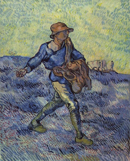
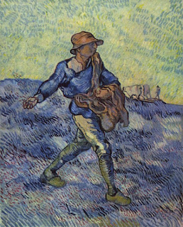

Um pouco da sua historia
Vincent van Gogh (1853-1890) foi um importante pintor holandês, um dos maiores representantes da pintura pós-impressionista.
Em 1881 muda-se para Haia, onde é acolhido pelo pintor Mauve. Pinta aquarelas, onde aparecem marinheiros, pescadores e camponeses.
Escreve para o irmão “Eu não quero pintar quadros, eu quero pintar a vida”. Realiza numerosos desenhos e pinturas a óleo. No ano seguinte volta para a casa dos pais, onde passa os dias lendo e pintando.
Em março de 1885 seu pai morre repentinamente. Em abril do mesmo ano, Van Gogh pinta Os Comedores de Batata, caracterizado pelas tonalidades escuras.
Em janeiro de 1886, Van Gogh viaja para Antuérpia, onde inicia estudos na Academia local. Em fevereiro é acolhido em Paris por seu irmão Theo. Essa é a época mais sociável do pintor. Familiariza-se com os impressionistas, Monet, Renoir e Pissarro. Mais tarde, fica amigo de Gauguin.
 
